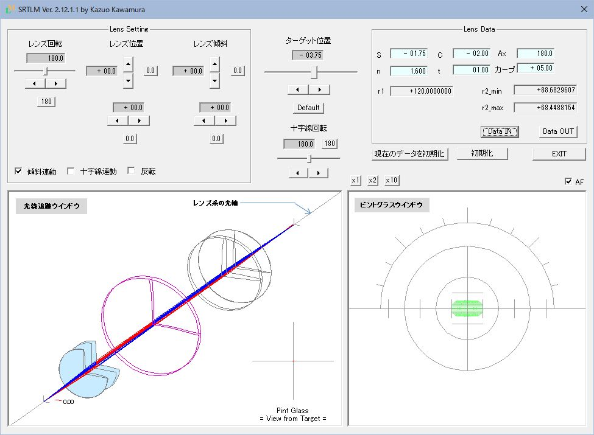

SRTLM レンズメーターシミュレーション ツール
概要
レンズメーターというと最近ではオートレンズメーターが主流となり、 手動式レンズメーターに振れたことがない方もいらっしゃるかもしれません。 レンズメーター自体はメガネの仕事に従事する方にとっては今でも必須のアイテムだと思います。
手動式のレンズメーターを通してメガネレンズの性質を学んで頂きたいと思って、シミュレーションツールを作成しました。
以下、SRTLMと略記します。
レンズメーターとメガネレンズについてざっくりとお知りになりたい方は
レンズメーターとは
をご覧下さい。
SRTMについての説明は
SRTM_取り扱い説明書
をご一読下さい。
特徴
-
単焦点レンズ(球面及びトーリック)の測定がシミュレーションできます。
-
ピント合わせ。
-
レンズの移動に伴うコロナ像(※)の動き(上下・左右の移動、回転)、目盛盤の回転、レンズの傾斜による非点収差の発生など。
※コロナ像は、光軸に沿って前後に移動するターゲットと呼ばれる小さな円盤に、同心円状に36個のピンホールが開いていて、 ピンホールを通った光線束がピントグラスで像として視覚化されるものです。
ターゲットにはこのコロナターゲットとコロナターゲットにクロスターゲット(十時のスリット)が組み合わさったタイプもあります。
本ツールはコロナターゲットを前提にしています。
-
-
被検レンズの形状を確認できます。
-
被検レンズが3Dで描画(強/弱主経に沿った断面図を含む)されます。
-
被検レンズの移動、回転、傾斜をリアルタイムに再現します。
-
-
結像状態が3Dで再現されます。
-
ターゲットから発した光線がピントグラスに像を結ぶまでの様子がシミュレーションされます。
-
被検レンズの移動、回転、傾斜にリアルタイムに対応します。
-
※実際のレンズメーターでは結像状態を見ることはできませんが
SRTMはシミュレーションツールなので、ray tracing(光線追跡)の結果を描画しています。
-
-
シミュレーションしたいレンズを作成し、保存、呼び出しができます。
-
作成は球面度数、円柱度数、屈折率、中心厚、前面カーブの指定ができます。
-
作成したレンズは保存、呼び出しが可能です。
-
起動時の画面を示します

ダウンロード
フリーウェアです。
インストール
SRTM_Jp.zipを解凍します。
解凍すると｢SRTM_Jp｣フォルダーが現れます。
｢SRTM_Jp｣フォルダーに、必要なデータ一式が格納されています。
以降の詳細は、フォルダー内の「readme.html」をご一読下さい。
アンインストール
｢SRTM_Jp｣フォルダーを削除して下さい。
これで、削除完了です。